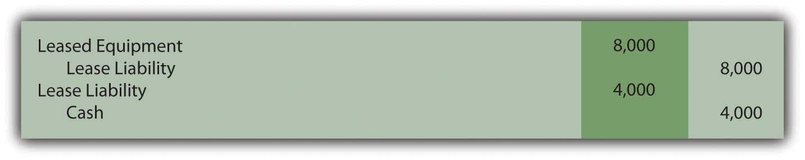
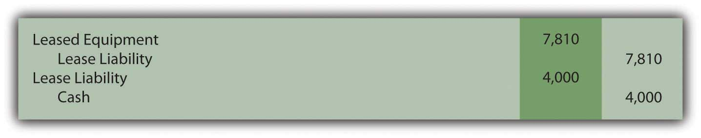
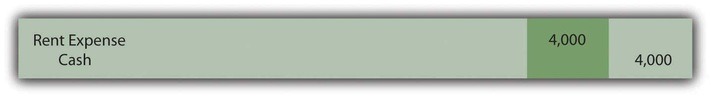
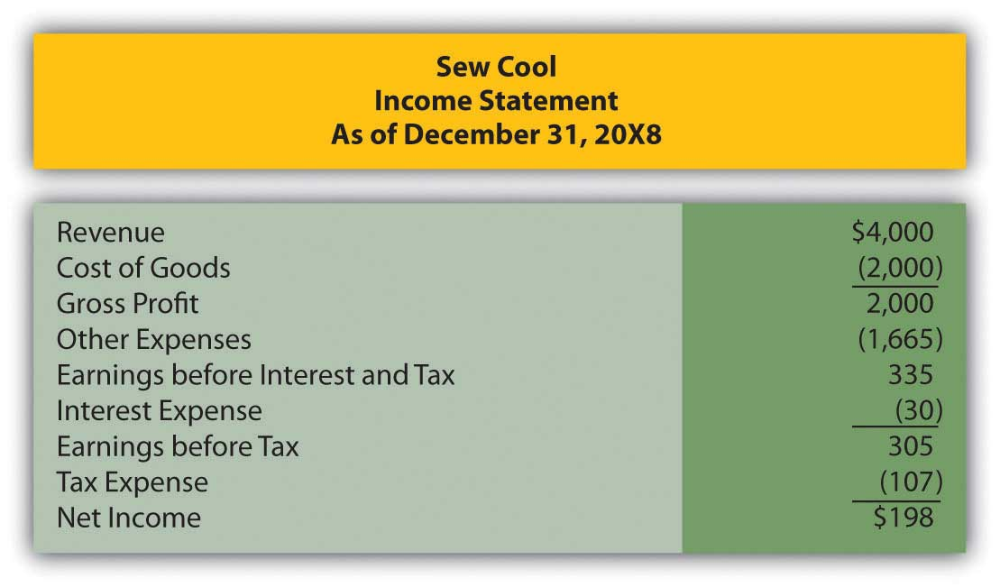
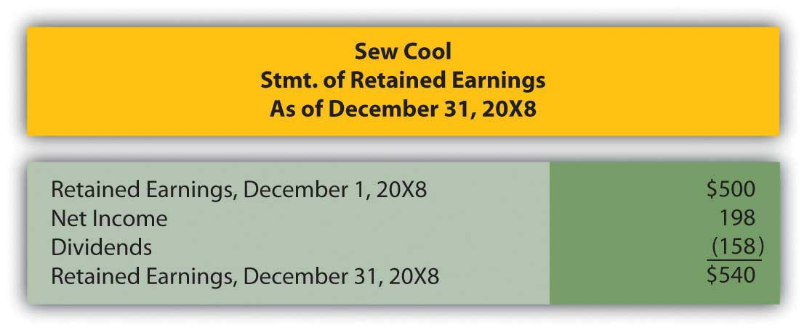
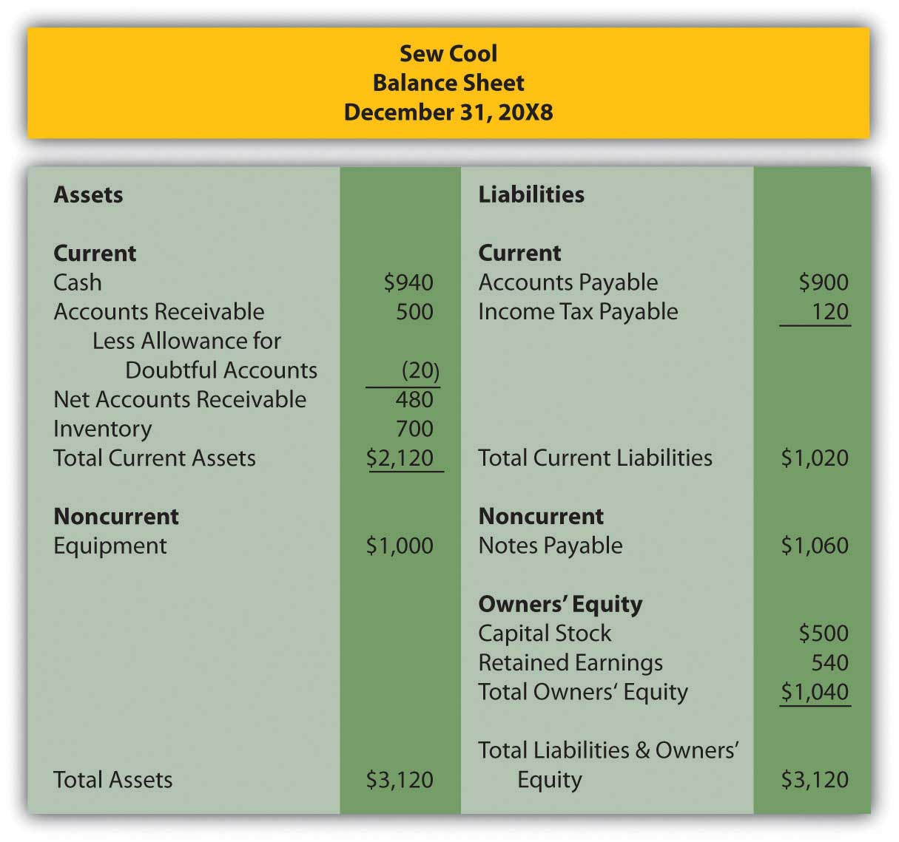
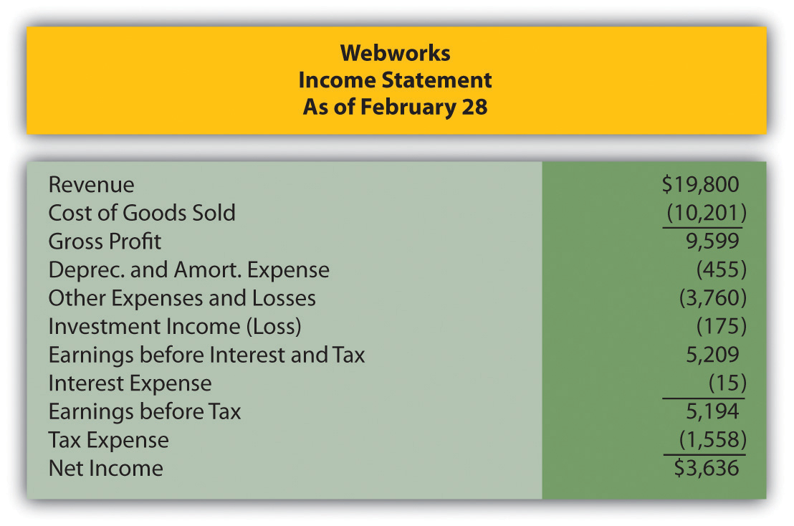
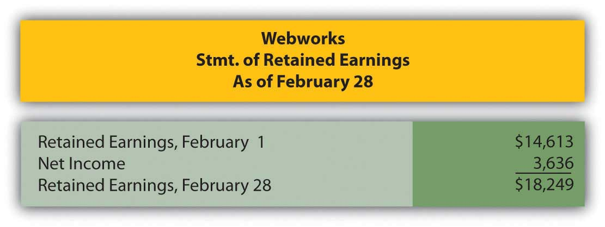
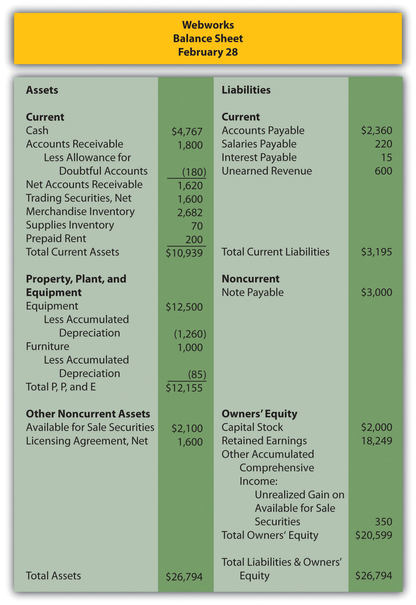

Which of the following is not a criterion that triggers capital lease recording?
Charlotte Company leases a piece of equipment on February 1. The lease covers two years and the life of the equipment is four years. There is no bargain purchase option, the equipment does not transfer to Charlotte at the end of the lease, and the payments do not approximate the fair value of the equipment. The payments are $4,000 due each February 1, starting with the current one. Charlotte’s incremental borrow rate is 5 percent. What journal entry(ies) should Charlotte make on February 1?
Figure 15.14
Figure 15.15
Figure 15.16
Figure 15.17
Sellers Corporation has assets of $450,000 and liabilities of $200,000. What is Sellers’ debt-to-equity ratio?
Which of the following is not a true statement about postretirement benefits?
Which of the following concerning deferred tax liabilities are true?
Myers Company leases a boat on January 1, 20X9. The lease qualifies as a capital lease. The lease covers four years, with payments of $20,000 annually, beginning on January 1, 20X9. The expected life of the boat is six years. Myers incremental borrowing rate is 4 percent. What amount of depreciation (rounded) should Myers recognize on the boat on December 31, 20X9 if Myers uses the straight-line method?
Which of the following is true concerning leases?
Hyde Corporation has long-term liabilities, such as bonds, notes and leases, for which interest expense must be accrued. During 20X7, Hyde had earnings before interest and taxes of $45,890 and interest expense of $9,920. Which of the following is Hyde’s times interest earned?
Fargo Corporation earns revenue in 20X2 that will be reported on its 20X2 income statement, but will not be reported on its tax return until 20X4. The revenue amounts to $800,000 and Fargo’s tax rate is 40 percent. Which of the following is a true statement?
United Company leases an office space in a downtown building. This qualifies as an operating lease. United pays $30,000 in advance for rent every quarter. Record journal entries for United for the following:
Ralph Corporation agreed to lease a piece of equipment to Amy Company on January 1, 20X4. The following info relates to the lease:
Prepare the following journal entries for Amy.
Landon Corporation has decided to rent crew trucks rather than purchasing them. On April 1, 20X5, Landon enters into an agreement with TuffEnough Trucks to lease three trucks worth $200,000. The lease agreement will span six years and the life of the trucks is estimated to be seven years. Landon’s incremental borrowing rate is 6 percent. The payments per year amount to $38,370, payable each April 1, beginning with 20X5.
In several past chapters, we have met Heather Miller, who started her own business, Sew Cool. The financial statements for December are shown below.
Figure 15.18 Sew Cool Financial Statements
Figure 15.19
Figure 15.20
Based on the financial statements determine the following:
Lori Company borrowed $10,000 from Secure Bank on January 1, 20X9. The interest rate on the loan is 6 percent annually. Lori also signed a five-year capital lease on January 1, 20X9. The payments are $5,000 each January 1, beginning with the current one. Lori’s incremental borrowing rate is 6 percent and the value of the leased asset is $22,326.
Myrtle Inc. begins 20X8 with liabilities of $456,000 and owners’ equity of $320,000. On the first day of 20X8, the following occur:
This problem will carry through several chapters, building in difficulty. It allows students to continuously practice skills and knowledge learned in previous chapters.
In Chapter 14 "In a Set of Financial Statements, What Information Is Conveyed about Noncurrent Liabilities Such as Bonds?", you prepared Webworks statements for February. They are included here as a starting point for March.
Figure 15.21 Webworks Financial Statements
Figure 15.22
Figure 15.23
The following events occur during March:
a. Webworks starts and completes seven more Web sites and bills clients for $5,000.
b. Webworks purchases supplies worth $110 on account.
c. At the beginning of March, Webworks had nineteen keyboards costing $118 each and twenty flash drives costing $22 each. Webworks uses periodic FIFO to cost its inventory.
d. On account, Webworks purchases 80 keyboards for $120 each and 100 flash drives for $23 each.
e. Webworks sells eighty-five keyboards for $12,750 and ninety-two of the flash drives for $2,760 cash.
f. Webworks collects $5,000 in accounts receivable.
g. Webworks pays off $12,000 of its accounts payable.
h. Leon determines that some of his equipment is not being used and sells it. The equipment sold originally cost $2,000 and had accumulated depreciation of $297. Webworks sold the equipment for $1,650 cash.
i. Webworks pays Nancy $750 for her work during the first three weeks of March.
j. Leon and Nancy are having trouble completing all their work now that the business has grown. Leon hires another assistant, Juan. Webworks pays Juan $550 for his help during the first three weeks of March.
k. Webworks writes off an account receivable from December in the amount of $200 because collection appears unlikely.
l. Webworks pays off its salaries payable from March.
m. Webworks pays Leon a salary of $3,500.
n. Webworks completes the design for the bakery, but not the photographer for which it was paid in February. Only $300 of the unearned revenue should be reclassified to revenue.
o. Webworks decides that more space is needed than that which is available in the home of Leon’s parents (much to his parents’ relief). His parents return the $200 he prepaid for March. Webworks signs a six-month lease in a nearby office building. Webworks will pay $500 at the beginning of each month, starting on March 1. The life of the building is forty years, and no bargain purchase option exists, nor do the payments come close to paying the market value of the space.
p. Webworks pays taxes of $580 in cash.
Required:
A. Prepare journal entries for the above events.
B. Post the journal entries to T-accounts.
C. Prepare an unadjusted trial balance for Webworks for March.
D. Prepare adjusting entries for the following and post them to your T-accounts.
q. Webworks owes Nancy $200 and Juan $150 for their work during the last week of March.
r. Webworks receives an electric bill for $400. Webworks will pay the bill in April.
s. Webworks determines that it has $50 worth of supplies remaining at the end of March.
t. Webworks is continuing to accrue bad debts at 10 percent of accounts receivable.
u. Webworks continues to depreciate its equipment over five years and its furniture over five years, using the straight-line method.
v. The license agreement should be amortized over its one-year life.
w. QRS Company is selling for $13 per share and RST Company is selling for $18 per share on March 31.
x. Interest should be accrued for March.
y. Record cost of goods sold.
E. Prepare an adjusted trial balance.
F. Prepare financial statements for March.